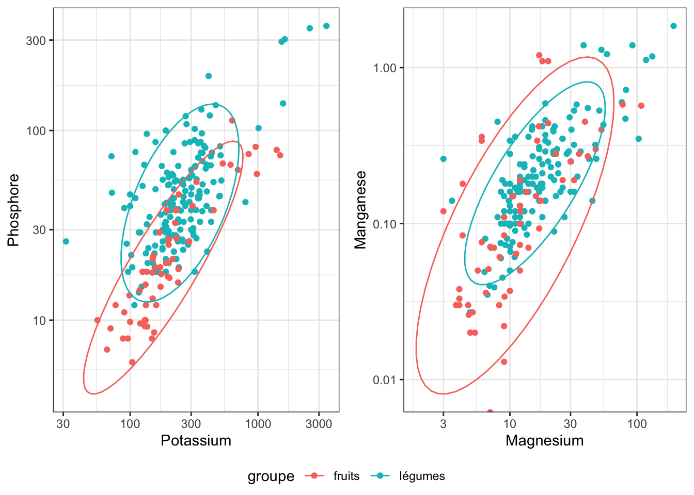

fruleg <- read_delim("fruleg.tsv")Exploration des données fruits et légumes
Les données
Les données sont lues depuis le fichier tabulé fruleg.tsv.
Les fruits et légumes sont répartis dans les sous-groupes suivants :
| Characteristic | fruits, N = 711 | légumes, N = 1891 |
|---|---|---|
| ssgroupe | ||
| compotes et assimilés | 7 (9.9%) | 0 (0%) |
| fruits appertisés | 5 (7.0%) | 0 (0%) |
| fruits crus | 40 (56%) | 0 (0%) |
| fruits et leurs produits de la Martinique | 9 (13%) | 0 (0%) |
| fruits et leurs produits de la Réunion | 1 (1.4%) | 0 (0%) |
| fruits séchés | 9 (13%) | 0 (0%) |
| légumes crus | 0 (0%) | 84 (44%) |
| légumes cuits | 0 (0%) | 97 (51%) |
| légumes et leurs produits de la Martinique | 0 (0%) | 3 (1.6%) |
| légumes séchés ou déshydratés | 0 (0%) | 5 (2.6%) |
| 1 n (%) | ||
Valeur nutritionnelle
Pour étudier la valeur nutritionnelle des fruits et légumes sélectionnés, on se concentre sur les teneurs en protéines, lipides, glucides et sucres.
Il n’y a aucune valeur manquante dans ces données, la table suivante décrit les variables nutritionnelles en fonction des groupes (fruits et légumes).
| Characteristic | fruits, N = 711 | légumes, N = 1891 |
|---|---|---|
| Proteines | 0.75 (0.49, 1.26) | 1.81 (1.19, 2.60) |
| Lipides | 0.31 (0.17, 0.54) | 0.30 (0.20, 0.48) |
| Glucides | 11 (8, 16) | 4 (2, 6) |
| Sucres | 10 (6, 15) | 2 (1, 4) |
| 1 Median (IQR) | ||
On réprésente cette information sous la forme de boxplots combinés à des diagrammes en violon. On observe un grande variabilité de la teneur en sucres, ou en glucides. Le jeu de données “fruits et légumes” peut servir d’exemple pour illustrer les test de comparaison de deux groupes (non appariés), avec des procédures paramétriques ou non-paramétriques.
Warning in scale_y_log10(): log-10 transformation introduced infinite values.
log-10 transformation introduced infinite values.Warning: Removed 2 rows containing non-finite outside the scale range
(`stat_ydensity()`).Warning: Removed 2 rows containing non-finite outside the scale range
(`stat_boxplot()`).
Teneur en minéraux
Il y a des données manquantes dans les colonnes concernant les minéraux, comme indiqué dans le tableau ci-dessous (“Unknown”).
| Characteristic | fruits, N = 711 | légumes, N = 1891 |
|---|---|---|
| Calcium | 14 (8, 39) | 30 (20, 49) |
| Unknown | 9 | 11 |
| Cuivre | 0.07 (0.04, 0.12) | 0.08 (0.05, 0.13) |
| Unknown | 8 | 27 |
| Fer | 0.28 (0.14, 0.64) | 0.68 (0.38, 1.01) |
| Unknown | 9 | 17 |
| Magnesium | 11 (6, 17) | 15 (11, 23) |
| Unknown | 9 | 20 |
| Manganese | 0.10 (0.04, 0.28) | 0.18 (0.12, 0.29) |
| Unknown | 12 | 25 |
| Phosphore | 18 (12, 37) | 42 (29, 63) |
| Unknown | 9 | 19 |
| Potassium | 173 (132, 238) | 240 (188, 340) |
| Unknown | 7 | 14 |
| Zinc | 0.11 (0.07, 0.22) | 0.28 (0.20, 0.49) |
| Unknown | 11 | 23 |
| 1 Median (IQR) | ||
La teneur en potassium en fonction de la teneur en phosphate est représentée ci-dessous sous la forme d’un nuage de points.

Valeur énergétique
La valeur énergétique est une fonction linéaire de la composition nutritionnelle1. Mais toutes les variables utilisées pour faire ce calcul ne sont pas disponibles pour tous les fruits et légumes de la table. Voici les résultats d’un modèle linéaire appris sur les aliments pour lesquels toutes les variables de la formule utilisée pour calculer la valeur énergétique sont disponible (i.e. sans aucune valeur manquante) :
| Characteristic | Beta | 95% CI1 | p-value |
|---|---|---|---|
| Lipides | 8.9 | 8.7, 9.1 | <0.001 |
| Alcool | |||
| Proteines | 3.9 | 3.2, 4.6 | <0.001 |
| Glucides | 4.0 | 3.9, 4.0 | <0.001 |
| AcidesOrganiques | 3.1 | 1.3, 4.9 | 0.003 |
| Polyols | -1.6 | -1.8, -1.5 | <0.001 |
| Fibres | 2.1 | 1.5, 2.7 | <0.001 |
| Adjusted R² | 1.00 | ||
| 1 CI = Confidence Interval | |||
Sans surprise, la valeur du \(R^2\) est quasiment égale à 1. Mais le résultat est également très proche de 1 si on entraîne un modèle uniquement sur la base de la teneur en lipides, protéines et glucides (pour lesquels il n’y a aucune valeur manquante du tout).
| Characteristic | Beta | 95% CI1 | p-value |
|---|---|---|---|
| Lipides | 9.4 | 9.1, 9.8 | <0.001 |
| Proteines | 4.9 | 4.2, 5.7 | <0.001 |
| Glucides | 3.9 | 3.8, 4.0 | <0.001 |
| Adjusted R² | 0.995 | ||
| 1 CI = Confidence Interval | |||
On peut donc estimer dans un premier temps les coefficients de ce modèle “réduit” sur les échantillons pour lesquels la valeur énergétique a pu être calculée, et approcher la valeur énergétique, en se basant uniquement sur les teneurs en protéines, lipides et glucides, pour les fruits et légumes pour lesquels la valeur énergétique est manquante.
Pour les données qui ne sont pas manquantes, on obtient la prédiction suivante (axe des \(y\)) en fonction de la valeur énergétique calculée avec la formule analytique. La valeur énergétique est un peu surestimée pour les petites valeurs, mais ce n’est pas particulièrement gênant pour un jeu de données qui servira à un cours.
Footnotes
La documentation indique que la valeur énergétique est calculée en utilisant les coefficients suivants : 37 kJ/g (9 kcal/g) pour les lipides, 29 kJ/g (7 kcal/g) pour l’alcool (éthanol), 17 kJ/g (4 kcal/g) pour les protéines, 17 kJ/g (4 kcal/g) pour les glucides (à l’exception des polyols), 13 kJ/g (3 kcal/g) pour les acides organiques, 10 kJ/g (2,4 kcal/g) pour les polyols, 8 kJ/g (2 kcal/g) pour les fibres alimentaires.”↩︎